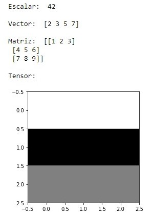

Escalar: Es un simple número. En Python puede ser mucho mas complejo: puede ser int, double, float, boolean, hasta puede ser un dato nulo.
¿En qué se diferencía un escalar, un vector, matriz y un tensor? En los grados de libertad que estamos teniendo para interactuar.
Un vector es un conjunto de números, una matrz es un conjuntos de vectores y un tensor es un conjunto de matrices.
%matplotlib inline
import matplotlib.pyplot as plt
//Las dos lineas pasadas son para la graficación de tensores.
import numpy as np //Numerical Python, para poder manejar matriz y tensores.
escalar = 42
print("Escalar: ", escalar)
vector = np.array([2,3,5,7])
print("\nVector: ",vector)
matriz = np.array([[1,2,3], [4, 5, 6], [7, 8, 9]])
print("\nMatriz: ",matriz)
tensor = np.array([
[[255, 255, 255], [255, 255, 255], [255, 255, 255]],
[[0, 0, 0], [0, 0, 0], [0, 0 ,0]],
[[128, 128, 128], [128, 128, 128], [128, 128, 128]],
])
print("\nTensor: ")
plt.imshow(tensor, interpolation='nearest')
plt.show()
Origina esto:
